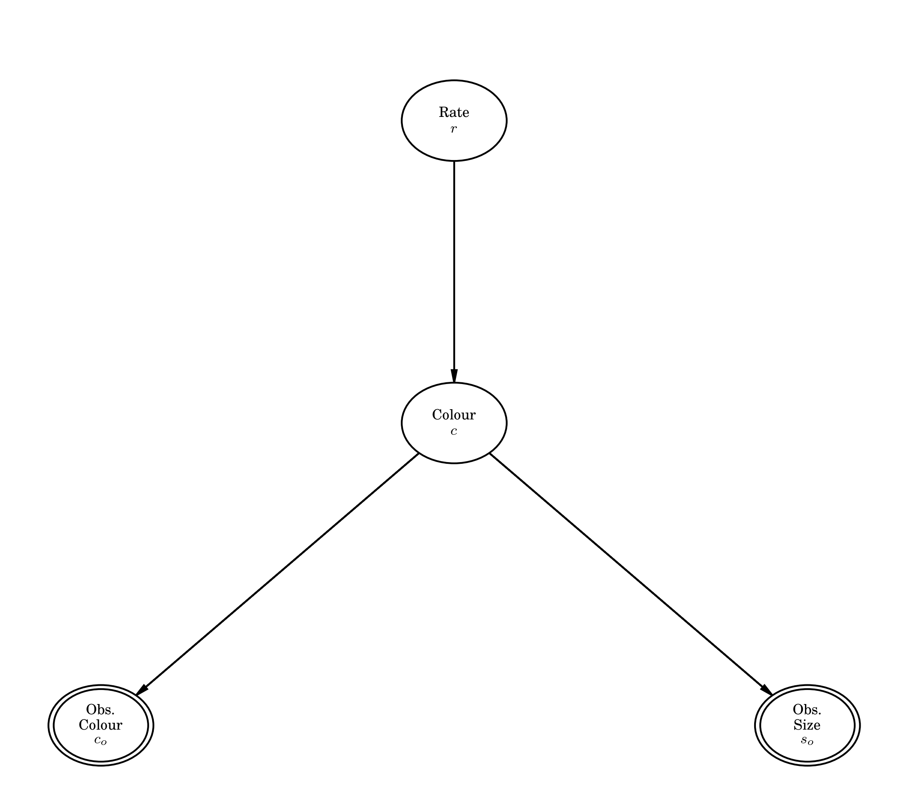
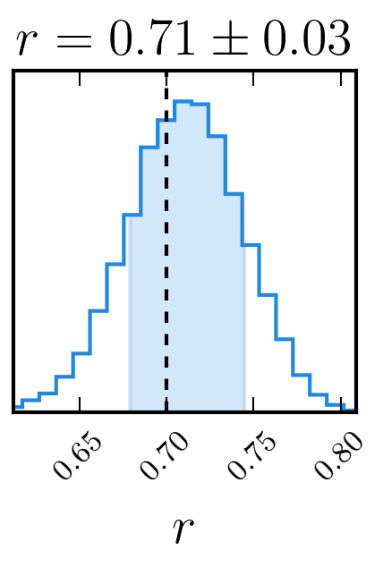

dessn.examples.discrete package¶
An example used to prototype the inclusion of discrete parameters into the mix.
The scenario being modelled is thus:
A bag is filled with an infinite amount of coloured balls, either red or blue, where the total fraction of the balls that are red is given by the variable \(r\). We remove only a few balls from this infinite bag and record the colour and size of the ball.
However, the person writing down the colour is mostly colour blind, and so mistakes do happen (at a known rate). Luckily, there is information contained in the physical size of the balls (which is measured perfectly), as red balls are generally found to be larger in radius than the blue balls. Knowing the size distribution, we can use this information to potentially correct for some misclassifications, and thus determine the actual fraction \(r\) of red balls in the bag.
Firstly, we model misidentification as:
We model the sizes as being Gaussian distributed based on the colour.
Following a basic binomial process, given a total fraction rate of \(r\), we have
Putting a flat prior on the rate between 0 and 1 (\(P(r) = 1\)), the total probability for \(n\) data points is
With three conditional probabilities, we will have three edges in our node, one discrete parameter \(c\), one underlying node \(r\), and two observed parameters \(s_o\) and \(c_o\).
Submodules¶
dessn.examples.discrete.discrete module¶
-
class
dessn.examples.discrete.discrete.DiscreteModel[source]¶ Bases:
dessn.model.model.ModelA small example model illustrating how to use discrete parameters.
As normal, the model is set up by declaring parameters (which can be thought of like nodes on a PGM), and declaring the edges between parameters (the conditional probabilities).
This is the primary class in this package, and you can see that other classes inherit from either
Parameteror fromEdge.I leave the documentation for
ParameterandEdgeto those classes, and encourage viewing the code directly to understand exactly what is happening.Running this file in python first generates a PGM of the model, and then runs
emceeand creates a corner plot:
-
class
dessn.examples.discrete.discrete.ToColour[source]¶ Bases:
dessn.model.edge.Edge
-
class
dessn.examples.discrete.discrete.ToColour2[source]¶ Bases:
dessn.model.edge.Edge
-
class
dessn.examples.discrete.discrete.ToRate[source]¶ Bases:
dessn.model.edge.Edge